Forecasting Project 1 - Group 7
Data cleaning
We import data and we clean it from NA and from blank rows. We also name the columns. Here is a sample of our data:
## date germany france italy austria lichtenstein total
## 1 January 2000 421 313 1760 3 24 2521
## 2 February 2000 412 141 1757 4 23 2337
## 3 March 2000 459 148 1962 4 23 2596
## 4 April 2000 474 114 1767 3 17 2375
## 5 May 2000 935 116 1927 42 14 3034
## 6 June 2000 910 101 1895 31 13 2950Data import
We directly import the data from the excel file, selecting only the range that contains the data, and then setting the column names accordingly.
#importing data directly from excel
data_elec <- read_excel("data/Electricity export Switzerland.xlsx",
range = "A6:G280", col_names = FALSE)## New names:
## • `` -> `...1`
## • `` -> `...2`
## • `` -> `...3`
## • `` -> `...4`
## • `` -> `...5`
## • `` -> `...6`
## • `` -> `...7`#Setting column names
colnames(data_elec) = c('Date','Germany','France','Italy','Austria','Lichtenstein','Total')Data cleaning
Looking at the data we see that October is written with a “k”, so we change that in the Date column. Then we check for missing values, before proceeding.
# replace "Oktober" with "October" in the Date column
data_elec$Date <- str_replace_all(data_elec$Date, "Oktober", "October")
#This uses the "DataExplorer" package
plot_intro(data_elec)
Converting to tsibble so that we can use the fpp3 and tsibble package functions
#Convert to tsibble
data_elec <- data_elec %>%
mutate(Date = yearmonth(Date)) %>% #need to do this before converting to get proper format
as_tsibble(index = Date)
#check that it's a tsibble now, and we can see it recognized the data is monthly because of the [1M]
is_tsibble(data_elec)## [1] TRUEdata_elec## # A tsibble: 275 x 7 [1M]
## Date Germany France Italy Austria Lichtenstein Total
## <mth> <dbl> <dbl> <dbl> <dbl> <dbl> <dbl>
## 1 2000 Jan 421 313 1760 3 24 2521
## 2 2000 Feb 412 141 1757 4 23 2337
## 3 2000 Mar 459 148 1962 4 23 2596
## 4 2000 Apr 474 114 1767 3 17 2375
## 5 2000 May 935 116 1927 42 14 3034
## 6 2000 Jun 910 101 1895 31 13 2950
## 7 2000 Jul 510 105 1950 16 14 2595
## 8 2000 Aug 612 152 1275 39 14 2092
## 9 2000 Sep 354 320 1849 18 17 2558
## 10 2000 Oct 439 291 2295 28 20 3073
## # ℹ 265 more rowsTHINGS THAT NEED TO BE DONE
In general:
- Select what will go in the final report
- Complete the Report
- Create table with final forecasts (DONE) + Confidence intervals (NEED TO DO)
- Add lichtenstein forecast table + inside the final_fc
Country specific:
- Explore huge peak in Austria 2002 -> is it an outlier
- Explain big drop in Lichtenstein + thought process behind piece-wise model
1. Introduction
This project is a forecasting analysis for the electricity exports from Switzerland to several European countries. The data used was all provided by the professor and no additional datasets were used. We have selected the models that fit each country the best (based on some performance metrics) and have created forecasts and CI’s for each country as well as the total. In the final report you are now reading, only the most important information is included, and whatever was deemed unnecessary for the report you can find in our code files.
The forecasting models used in this project are S-Naive, S-ARIMA, ETS and a variant of TSLM (piece-wise) for a specific country.
2. Data Processing
The data we were given was already cleaned, without any missing values. The only noteworthy cleaning we did, was to format the names of all columns and all rows, and to then convert the final table to a tsibble in order to be able to use functions from the tsibble and fpp3 package. All details on how this was done can be found in the code files.
3. Exploratory Data Analysis
3.1 Historical data plots
In this section you can find an example of the exploratory analysis we did to identify outliers and behaviors in our data. We created historical plots of all the data for each country, but this is not presented here and can instead be found in our code files (eda.rmd). The anomalies and outliers in the behaviors of exports for each country, helped guide the rest of our analysis.
For example, we noticed irregularities in the amplitudes of seasonality over time. For countries like Germany and France, the amplitude of the seasonality seems to increase towards the most recent years. Based on this, we decided to do a seasonal/trend decomposition for each country to further analyze this.
Furthermore, for Lichtenstein, we noticed a huge drop in exports after 2008-2009, which indicated that we should try different models like the piece-wise model to seperate the differences in trend over time.
3.2 Seasonal Sub-series plots
We also created seasonal sub-series plots to explore specific months in more detail, for each country. Below you can see the one for the total exports:
data_elec %>% gg_subseries(Total) +
ylab("GWt") + xlab("Month") +
ggtitle("Seasonal subseries plot: Swiss electricity exported to All countries")
Here are some observations based on these plots for each country (which you can find in eda.rmd):
- Germany: It looks like Germany consistently receives more electricity during the summer months (May, June, July, August). Seasonality seems to vary over time, increasing towards the most recent years.
- France: It looks like there are two peaks in energy exported to
France during the year, one in July, and one in December.
- Italy: Similar energy peak in July.
- Austria: Same trend, with a single peak in the summer months, and then relatively constant energy for the other months.
- Lichtenstein: This country shows the opposite trend, with a very
smooth peak in the coldest winter months (Jan,Feb), and the lowest
energy exports during the summer months.
- Total: Clearly seeing the peak in energy exports to countries in the summer, and specifically in July. The other months are at similar levels for the total electricity exports.
In summary, the main observation we got from these historical plots, was that all countries (except Lichtenstein) experience peaks in the electricity they receive from Switzerland in the summer months.
Before this monthly analysis, we expected that energy exports to these countries, would be higher in the winter months, as that’s when people tend to consumer more energy to heat up their homes (we assumed this to be one of the biggest drivers in energy consumption). However, in reality it seems like electricity exports are peaking in the summer and not in the winter months. Our explanation for this is that the ways to heat up a home in the winter are mainly based on oil/gas rather than electricity which is why there is no peak for electricity exports in the winter. On the contrary, during the summer months, people tend to cool down their homes using Air-conditioning which primarily uses electricity, hence the peak in the summer months. This does not explain why Lichtenstein does not follow the same pattern, despite being geographically right next to all of these countries (hence having similar climate).
3.3 ACF - Autocorrelation analysis
Before moving on with the models and in order to be able to use them, we wanted to check for autocorrelation in the time series. Here is data on Germany which is lagged by 12 periods:
#Graph of 12 lagged months for Germany
data_elec %>%
gg_lag(Germany, lags = 1:12, geom="point") +
ggtitle("Germany 12-period lag graph")
From this graph, we can visualize autocorrelation. It’s clear that the autocorrelation is the highest for the 1-month lag, and the 12-month lag. We can see this because the points in the scatterplots (Current month vs Lagged period x) approach the 45-degree line, indicating the similarity in magnitude of two the observations.
Based on the strong and clear presence of autocorrelation, we expect that a model like ARIMA/SARIMA will do a good job to capture this auto-correlation component, and will most likely have the best performance compared to other models. On the contrary, auto-correlation tends to impact the performance of SNAIVE models, as they rely on the assumption that the future values are solely determined by past values without considering any auto-correlation patterns. This suggests that our SNAIVE model will not be fitting the data as well.
3.4 Decomposition
In the final part of our EDA, we decided to perform an STL decomposition, as it can provide valuable insights and help explore and understand any strange patterns in our data. Overall, we observed strong seasonality and trend patterns in each country and all countries together which suggested our models should have a way to capture their presence.
Here’s the STL decomposition for Germany:
data_elec %>%
model(STL(Germany ~ trend(window = 7) + season(window = "periodic"),
robust = TRUE)) %>%
components() %>%
autoplot()
Decomposition
As time series data often consists of different patterns, it is helpful to split time series into components, each representing a pattern category. As a result, we can understand how each element behaves over time and model each separately for greater forecasting accuracy results. It will also help to decide on the type of forecasting model.
For this purpose, we considered different types of decomposition techniques: * Classical Decomposition assumes seasonal component repeats from year to year, which usually is not the case in reality, over smoothes rapid rises (is not recommended to use, but still…). * STL Decomposition is a versatile and robust method that handles any seasonality; seasonal components can change, and smoothness can be controlled. * X-11 method originated in the US Census Bureau and was further developed by Statistics Canada, based on classical decomposition, a slightly improved version of classical decomposition; the seasonal component varies slowly over time, highly robust to outliers and level shifts in the time series. We decided to continue with STL Decomposition.
We observe strong seasonality and trend patterns in each country and all countries together. The data is non-stationary.
STL Decomposition for all countries
Germany
data_elec %>%
model(STL(Germany ~ trend(window = 7) + season(window = "periodic"),
robust = TRUE)) %>%
components() %>%
autoplot()
France
#STL Decomposition_France
data_elec %>%
model(STL(France ~ trend(window = 7) + season(window = "periodic"),
robust = TRUE)) %>%
components() %>%
autoplot()
Italy
data_elec %>%
model(STL(Italy ~ trend(window = 7) + season(window = "periodic"),
robust = TRUE)) %>%
components() %>%
autoplot()
Austria
data_elec %>%
model(STL(Austria ~ trend(window = 7) + season(window = "periodic"),
robust = TRUE)) %>%
components() %>%
autoplot()
Lichtenstein
data_elec %>%
model(STL(Lichtenstein ~ trend(window = 7) + season(window = "periodic"),
robust = TRUE)) %>%
components() %>%
autoplot()
Total
data_elec %>%
model(STL(Total ~ trend(window = 7) + season(window = "periodic"),
robust = TRUE)) %>%
components() %>%
autoplot()
Model Selection
Methodology
To evaluate the forecast accuracy, we will test how a model performs on new data not used during the fitting phase. So, we split our data into training and test set. The first one we will use to estimate any parameters of the forecasting method, and the second - is to define the model’s accuracy. We fit the training data to models selected (ARIMA, ETS, SNAIVE) to forecast 60 following periods (in our case, months). We refit our models with test data and calculate the accuracy of the forecast. We select the model with the lowest accuracy metrics for further forecast. Low metric values indicate the better predictive performance of the model, with a value of 0 indicating a perfect fit between the predicted and actual values. Residuals analysis is also going to be plotted to see how well the model captures the dynamics of the data. Good models’ residuals should be stationary (white noise) and have no patterns.
We can see strong seasonality and trend in data from our decomposition analysis, so we tested ARIMA, ETS, and Seasonal NAIVE models as we assume these models can handle these types of data the best.
Lichtenstein Analysis will be described separately.
Germany
Germany_since_2015 <- data_elec %>%
select(Date,Germany) %>%
suppressWarnings(filter(Date >= as.Date("2015-01-01")))Testing Models
Below is the plot of how well each model fits the data based on a 60-period prediction starting from 2016.
#Split the data
training_ge <- data_elec %>% select(Date,Germany) %>% filter(Date < as.Date("2016-01-01"))## Warning: There was 1 warning in `filter()`.
## ℹ In argument: `Date < as.Date("2016-01-01")`.
## Caused by warning:
## ! Incompatible methods ("<.vctrs_vctr", "<.Date") for "<"test_ge <- data_elec %>% select(Date,Germany) %>% filter(Date >= as.Date("2016-01-01"))## Warning: There was 1 warning in `filter()`.
## ℹ In argument: `Date >= as.Date("2016-01-01")`.
## Caused by warning:
## ! Incompatible methods (">=.vctrs_vctr", ">=.Date") for ">="# Fit ARIMA model and generate forecasts
data_fit_ge_a <- training_ge %>%
model(ARIMA(Germany))
forecasts_ge_a <- data_fit_ge_a %>%
forecast(h = 60)
# Fit ETS model and generate forecasts
data_fit_ge_e <- training_ge %>%
model(ETS(Germany))
forecasts_ge_e <- data_fit_ge_e %>%
forecast(h = 60)
# Fit seasonal naive model and generate forecasts
data_fit_ge_n <- training_ge %>%
model(SNAIVE(Germany))
forecasts_ge_n <- data_fit_ge_n %>%
forecast(h = 60)
# Combine forecasts into a single data frame
all_forecasts_ge <- bind_rows(
data.frame(Date = forecasts_ge_a$Date, Method = "ARIMA", Forecast = forecasts_ge_a$.mean),
data.frame(Date = forecasts_ge_e$Date, Method = "ETS", Forecast = forecasts_ge_e$.mean),
data.frame(Date = forecasts_ge_n$Date, Method = "SNAIVE", Forecast = forecasts_ge_n$.mean))
# Plot all three sets of forecasts together
data_elec %>% autoplot(Germany) +
geom_line(data = all_forecasts_ge, aes(x = Date, y = Forecast, color = Method)) +
labs(title = "Electricity Consumption in Germany")
Measuring Model Accuracy
According to the accuracy table RMSE, MAE and other indicators, ARIMA has the lowest values on the test data. The ARIMA model has an AIC of 2422.94, AICc of 2423.39, and BIC of 2442.49. On the other hand, the ETS model has an AIC of 2975.557, AICc of 2978.110, and BIC of 3025.329. These information criteria are used to assess the goodness of fit of a model, with lower values indicating a better fit. Therefore, based on these criteria, we can conclude that the ARIMA model fits the data better than the ETS model.
#Accuracy
germany_accuracy_a <-data_fit_ge_a %>%
refit(test_ge) %>%
accuracy()
germany_accuracy_e <-data_fit_ge_e %>%
refit(test_ge) %>%
accuracy()
germany_accuracy_n <-data_fit_ge_n %>%
refit(test_ge) %>%
accuracy()
germany_accuracy_table <- rbind(
data.frame(germany_accuracy_a),
data.frame(germany_accuracy_e),
data.frame(germany_accuracy_n))
#AIC
germany_accuracy_table## .model .type ME RMSE MAE MPE MAPE
## 1 ARIMA(Germany) Training 9.0270898 191.3758 120.9560 -6.177920 30.32461
## 2 ETS(Germany) Training -34.0600578 210.3173 130.9707 -9.946267 32.28047
## 3 SNAIVE(Germany) Training 0.5211268 329.2936 218.9718 -12.958205 52.08664
## MASE RMSSE ACF1
## 1 0.5523815 0.5811706 0.4239149
## 2 0.5981166 0.6386924 0.5151985
## 3 1.0000000 1.0000000 0.6538549report(data_fit_ge_a)## Series: Germany
## Model: ARIMA(1,0,1)(2,1,1)[12]
##
## Coefficients:
## ar1 ma1 sar1 sar2 sma1
## 0.7853 -0.2946 -0.8231 -0.4046 0.0965
## s.e. 0.0731 0.1106 0.1925 0.1247 0.2054
##
## sigma^2 estimated as 15296: log likelihood=-1124.06
## AIC=2260.11 AICc=2260.6 BIC=2279.27report(data_fit_ge_e)## Series: Germany
## Model: ETS(M,N,M)
## Smoothing parameters:
## alpha = 0.3739358
## gamma = 0.3451097
##
## Initial states:
## l[0] s[0] s[-1] s[-2] s[-3] s[-4] s[-5] s[-6]
## 653.4368 0.6246774 0.7255761 0.7347587 1.011001 1.387123 1.493534 1.469065
## s[-7] s[-8] s[-9] s[-10] s[-11]
## 1.560156 0.7932617 0.864902 0.6433645 0.6925801
##
## sigma^2: 0.094
##
## AIC AICc BIC
## 2797.057 2799.784 2845.919Residuals
The output below also suggests that the ARIMA model did well in capturing all the dynamics in data, as the residuals seem to be white noise.
gg_tsresiduals(data_fit_ge_a) + labs(title = "ARIMA Germany residuals analysis")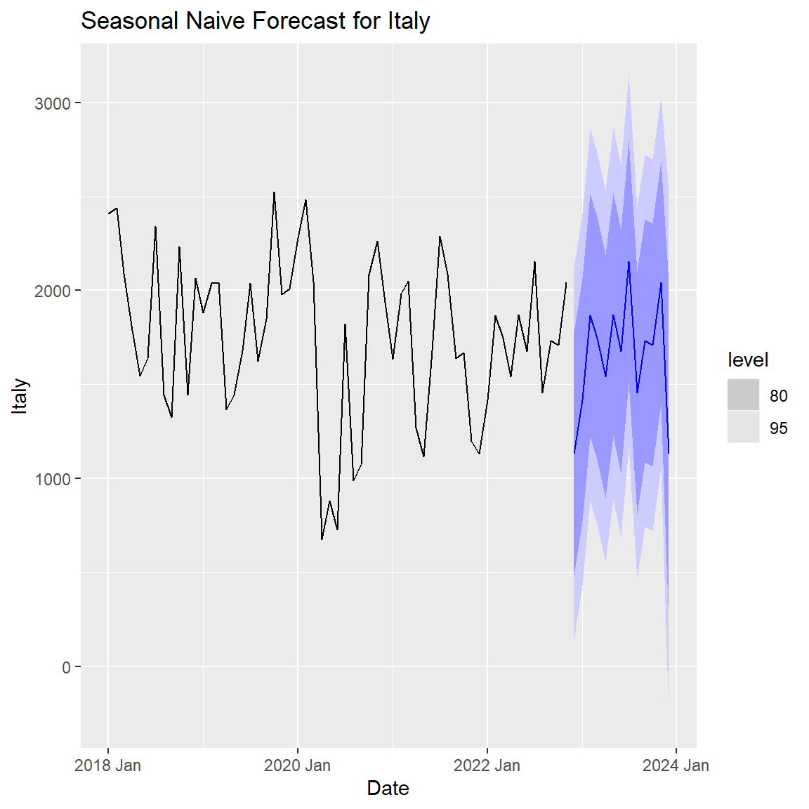
gg_tsresiduals(data_fit_ge_e) + labs(title = "ETS Germany residuals analysis")
gg_tsresiduals(data_fit_ge_n) + labs(title = "SNAIVE Germany residuals analysis")## Warning: Removed 12 rows containing missing values (`geom_line()`).## Warning: Removed 12 rows containing missing values (`geom_point()`).## Warning: Removed 12 rows containing non-finite values (`stat_bin()`).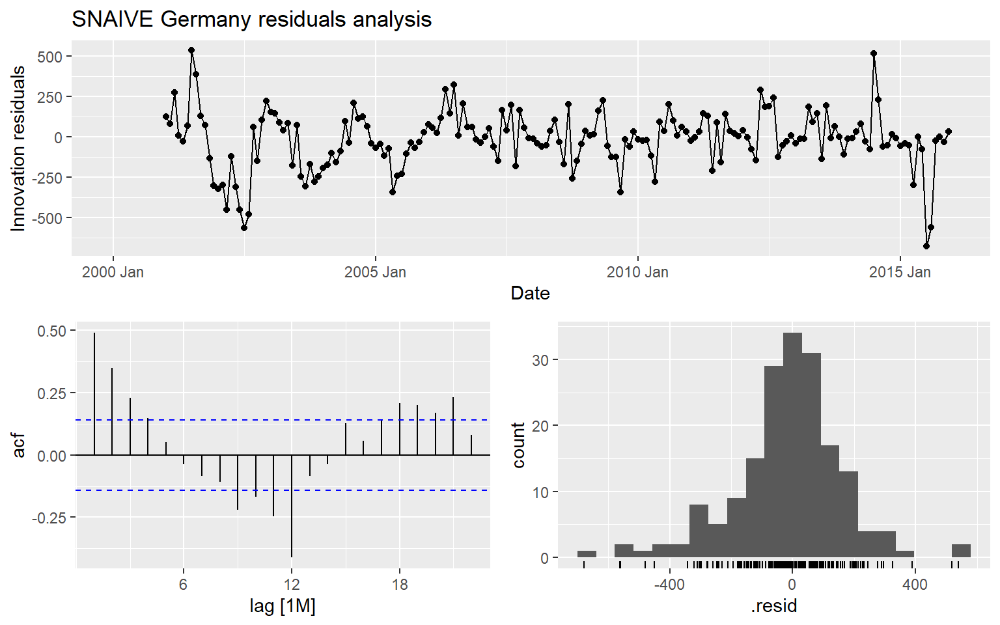
Italy
#Selecting Italy only since 2018 to better display the forecast. 2018 will both show the trend BEFORE covid + improve display
Italy_since_2018 <- data_elec %>% select(Date,Italy) %>% filter(Date >= as.Date("2018-01-01"))## Warning: There was 1 warning in `filter()`.
## ℹ In argument: `Date >= as.Date("2018-01-01")`.
## Caused by warning:
## ! Incompatible methods (">=.vctrs_vctr", ">=.Date") for ">="Testing Models
Below is the plot of how well each model fits the data based on a 60-period prediction starting from 2016.
#Split the data
training_it <- data_elec %>% select(Date, Italy) %>% filter(Date < as.Date("2016-01-01"))## Warning: There was 1 warning in `filter()`.
## ℹ In argument: `Date < as.Date("2016-01-01")`.
## Caused by warning:
## ! Incompatible methods ("<.vctrs_vctr", "<.Date") for "<"test_it <- data_elec %>% select(Date, Italy) %>% filter(Date >= as.Date("2016-01-01"))## Warning: There was 1 warning in `filter()`.
## ℹ In argument: `Date >= as.Date("2016-01-01")`.
## Caused by warning:
## ! Incompatible methods (">=.vctrs_vctr", ">=.Date") for ">="# Fit ARIMA model and generate forecasts
data_fit_it_a <- training_it %>%
model(ARIMA(Italy))
forecasts_it_a <- data_fit_it_a %>%
forecast(h = 60)
forecasts_it_a <- data_fit_it_a %>%
forecast(h = 60)
# Fit ETS model and generate forecasts
data_fit_it_e <- training_it %>%
model(ETS(Italy))
forecasts_it_e <- data_fit_it_e %>%
forecast(h = 60)
# Fit seasonal naive model and generate forecasts
data_fit_it_n <- training_it %>%
model(SNAIVE(Italy))
forecasts_it_n <- data_fit_it_n %>%
forecast(h = 60)
# Combine forecasts into a single data frame
all_forecasts_it <- bind_rows(
data.frame(Date = forecasts_it_a$Date, Method = "ARIMA", Forecast = forecasts_it_a$.mean),
data.frame(Date = forecasts_it_e$Date, Method = "ETS", Forecast = forecasts_it_e$.mean),
data.frame(Date = forecasts_it_n$Date, Method = "SNAIVE", Forecast = forecasts_it_n$.mean))
# Plot all three sets of forecasts together
data_elec %>% autoplot(Italy) +
geom_line(data = all_forecasts_it, aes(x = Date, y = Forecast, color = Method)) +
labs(title = "Electricity Demand in Italy")
Measuring Model Accuracy
According to the accuracy table below, RMSE, MAE, and other indicators, ETS has the lowest values on the test data. However, ARIMA has lower values of AIC=2708.77, AICc=2709.1, and BIC=2725.06 than the ETS model.
#Accuracy
italy_accuracy_a <-data_fit_it_a %>%
refit(test_it) %>%
accuracy()
italy_accuracy_e <-data_fit_it_e %>%
refit(test_it) %>%
accuracy()
italy_accuracy_n <-data_fit_it_n %>%
refit(test_it) %>%
accuracy()
italy_accuracy_table <- rbind(
data.frame(italy_accuracy_a),
data.frame(italy_accuracy_e),
data.frame(italy_accuracy_n))
#AIC
report(data_fit_it_a)## Series: Italy
## Model: ARIMA(1,0,0)(2,0,0)[12] w/ mean
##
## Coefficients:
## ar1 sar1 sar2 constant
## 0.6369 0.3471 0.3479 227.4524
## s.e. 0.0565 0.0673 0.0717 16.0636
##
## sigma^2 estimated as 73103: log likelihood=-1349.39
## AIC=2708.77 AICc=2709.1 BIC=2725.06report(data_fit_it_e)## Series: Italy
## Model: ETS(A,N,A)
## Smoothing parameters:
## alpha = 0.7893584
## gamma = 0.0001000066
##
## Initial states:
## l[0] s[0] s[-1] s[-2] s[-3] s[-4] s[-5] s[-6]
## 2001.551 15.17983 90.59285 210.0609 -95.62885 -503.615 165.2749 -103.177
## s[-7] s[-8] s[-9] s[-10] s[-11]
## -101.2201 -20.17958 171.0857 59.06312 112.5631
##
## sigma^2: 71693.32
##
## AIC AICc BIC
## 3171.492 3174.219 3220.354italy_accuracy_table## .model .type ME RMSE MAE MPE MAPE
## 1 ARIMA(Italy) Training -48.053328 349.3088 284.5911 -7.772352 19.11066
## 2 ETS(Italy) Training -2.494859 311.7141 241.4607 -2.802543 14.91659
## 3 SNAIVE(Italy) Training -12.436620 554.0566 432.4366 -7.043190 28.78426
## MASE RMSSE ACF1
## 1 0.6581105 0.6304568 -0.03999788
## 2 0.5583725 0.5626034 0.03031226
## 3 1.0000000 1.0000000 0.53072915Residuals
The output below also suggests that the ARIMA model did well in capturing all the dynamics in data, as the residuals seem to be white noise.
gg_tsresiduals(data_fit_it_a) + labs(title = "ARIMA Italy residuals analysis")
gg_tsresiduals(data_fit_it_e) + labs(title = "ETS Italy residuals analysis")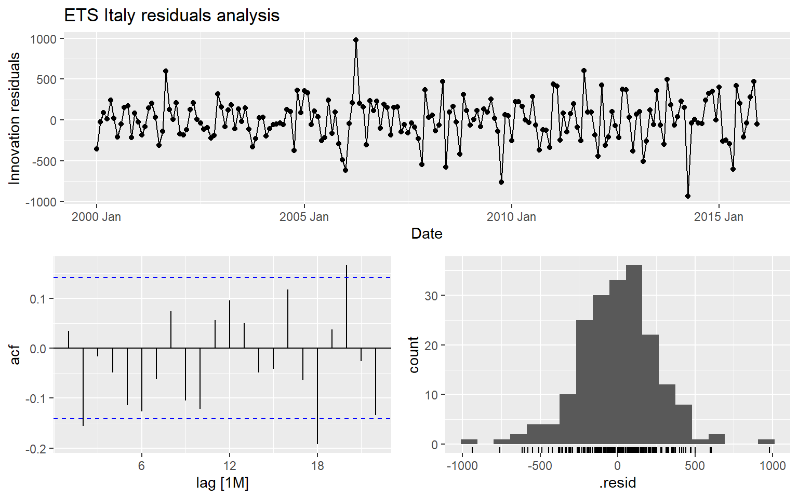
gg_tsresiduals(data_fit_it_n) + labs(title = "SNAIVE Italy residuals analysis")## Warning: Removed 12 rows containing missing values (`geom_line()`).## Warning: Removed 12 rows containing missing values (`geom_point()`).## Warning: Removed 12 rows containing non-finite values (`stat_bin()`).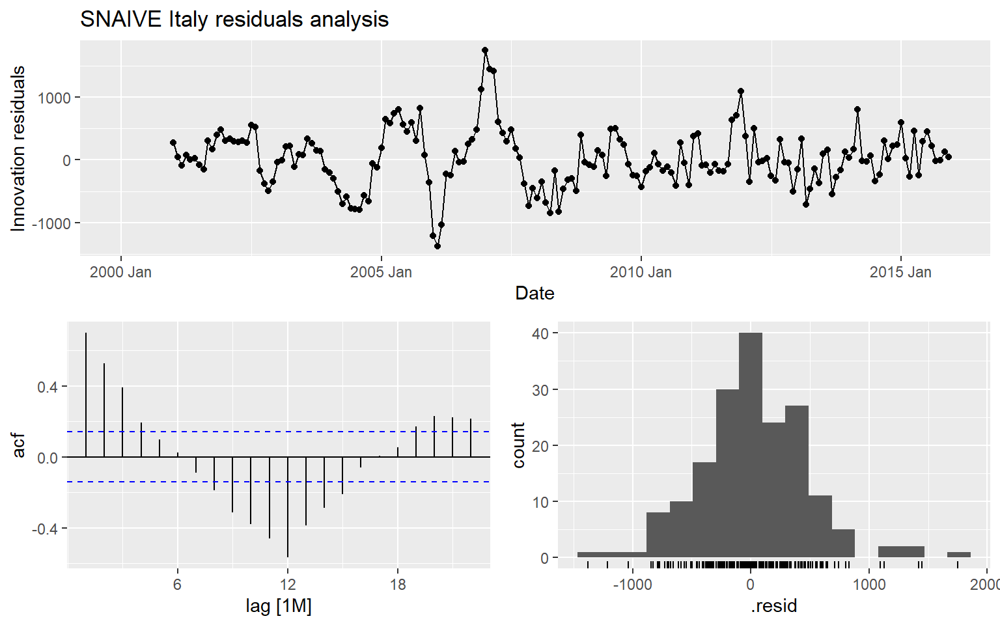
Austria
#Investigating Austria closely since 2018, because it seems like something changed -> perhaps should use Piecewise!!!
Austria_since_2015 <- data_elec %>% select(Date,Austria) %>% filter(Date >= as.Date("2015-01-01"))## Warning: There was 1 warning in `filter()`.
## ℹ In argument: `Date >= as.Date("2015-01-01")`.
## Caused by warning:
## ! Incompatible methods (">=.vctrs_vctr", ">=.Date") for ">="Austria_since_2018 <- data_elec %>% select(Date,Austria) %>% filter(Date >= as.Date("2018-02-01"))## Warning: There was 1 warning in `filter()`.
## ℹ In argument: `Date >= as.Date("2018-02-01")`.
## Caused by warning:
## ! Incompatible methods (">=.vctrs_vctr", ">=.Date") for ">="Testing Models
Below is the plot of how well each model fits the data based on a 60-period prediction starting from 2016.
#Split the data
training_au <- data_elec %>% select(Date, Austria) %>% filter(Date < as.Date("2016-01-01"))## Warning: There was 1 warning in `filter()`.
## ℹ In argument: `Date < as.Date("2016-01-01")`.
## Caused by warning:
## ! Incompatible methods ("<.vctrs_vctr", "<.Date") for "<"test_au <- data_elec %>% select(Date, Austria) %>% filter(Date >= as.Date("2016-01-01"))## Warning: There was 1 warning in `filter()`.
## ℹ In argument: `Date >= as.Date("2016-01-01")`.
## Caused by warning:
## ! Incompatible methods (">=.vctrs_vctr", ">=.Date") for ">="# Fit ARIMA model and generate forecasts
data_fit_au_a <- training_au %>%
model(ARIMA(Austria, stepwise = FALSE))
forecasts_au_a <- data_fit_au_a %>%
forecast(h = 60)
# Fit ETS model and generate forecasts
data_fit_au_e <- training_au %>%
model(ETS(Austria))
forecasts_au_e <- data_fit_au_e %>%
forecast(h = 60)
# Fit seasonal naive model and generate forecasts
data_fit_au_n <- training_au %>%
model(SNAIVE(Austria))
forecasts_au_n <- data_fit_au_n %>%
forecast(h = 60)
# Combine forecasts into a single data frame
all_forecasts_au <- bind_rows(
data.frame(Date = forecasts_au_a$Date, Method = "ARIMA", Forecast = forecasts_au_a$.mean),
data.frame(Date = forecasts_au_e$Date, Method = "ETS", Forecast = forecasts_au_e$.mean),
data.frame(Date = forecasts_au_n$Date, Method = "SNAIVE", Forecast = forecasts_au_n$.mean))
# Plot all three sets of forecasts together
data_elec %>% autoplot(Austria) +
geom_line(data = all_forecasts_au, aes(x = Date, y = Forecast, color = Method)) +
labs(title = "Electricity Demand in Austria")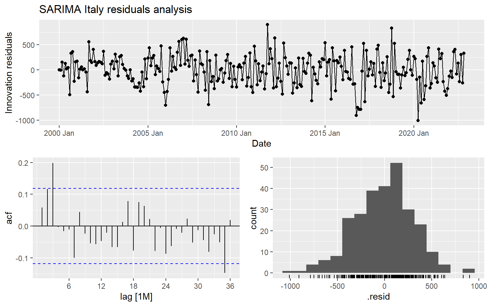
Measuring Model Accuracy
According to the accuracy table below, RMSE, MAE, and other indicators, ETS has the lowest values on the test data. However, ARIMA has lower values of AIC=1839.24, AICc=1840.03, and BIC=1865.3 than the ETS model.
#Accuracy
austria_accuracy_a <-data_fit_au_a %>%
refit(test_au) %>%
accuracy()
austria_accuracy_e <-data_fit_au_e %>%
refit(test_au) %>%
accuracy()
austria_accuracy_n <-data_fit_au_n %>%
refit(test_au) %>%
accuracy()
austria_accuracy_table <- rbind(
data.frame(austria_accuracy_a),
data.frame(austria_accuracy_e),
data.frame(austria_accuracy_n))
#AIC
report(data_fit_au_a)## Series: Austria
## Model: ARIMA(0,0,3)(2,0,1)[12] w/ mean
##
## Coefficients:
## ma1 ma2 ma3 sar1 sar2 sma1 constant
## 0.5991 0.1591 0.1055 0.6072 0.0853 -0.3699 6.3202
## s.e. 0.0742 0.0814 0.0731 0.2940 0.1561 0.2850 2.1449
##
## sigma^2 estimated as 796.7: log likelihood=-911.62
## AIC=1839.24 AICc=1840.03 BIC=1865.3report(data_fit_au_e)## Series: Austria
## Model: ETS(A,N,A)
## Smoothing parameters:
## alpha = 0.5246043
## gamma = 0.0001000228
##
## Initial states:
## l[0] s[0] s[-1] s[-2] s[-3] s[-4] s[-5] s[-6]
## 39.20052 -12.84024 -7.616428 -8.086183 -0.9683645 43.50499 39.8389 2.189109
## s[-7] s[-8] s[-9] s[-10] s[-11]
## 0.7038562 -11.55768 -14.38028 -16.43484 -14.35283
##
## sigma^2: 895.6703
##
## AIC AICc BIC
## 2330.036 2332.764 2378.899austria_accuracy_table## .model .type ME RMSE MAE
## 1 ARIMA(Austria, stepwise = FALSE) Training 23.712075 58.28096 41.41573
## 2 ETS(Austria) Training 1.957058 49.14910 35.08150
## 3 SNAIVE(Austria) Training 10.760563 88.47408 67.54930
## MPE MAPE MASE RMSSE ACF1
## 1 -18.68018 72.22767 0.6131186 0.6587349 -0.05024102
## 2 -66.98305 101.49245 0.5193467 0.5555198 0.04964282
## 3 -57.48300 118.72629 1.0000000 1.0000000 0.50380298Residuals
The output below also suggests that the ARIMA model did well in capturing all the dynamics in data, as the residuals seem to be white noise.
gg_tsresiduals(data_fit_au_a) + labs(title = "ARIMA Austria residuals analysis")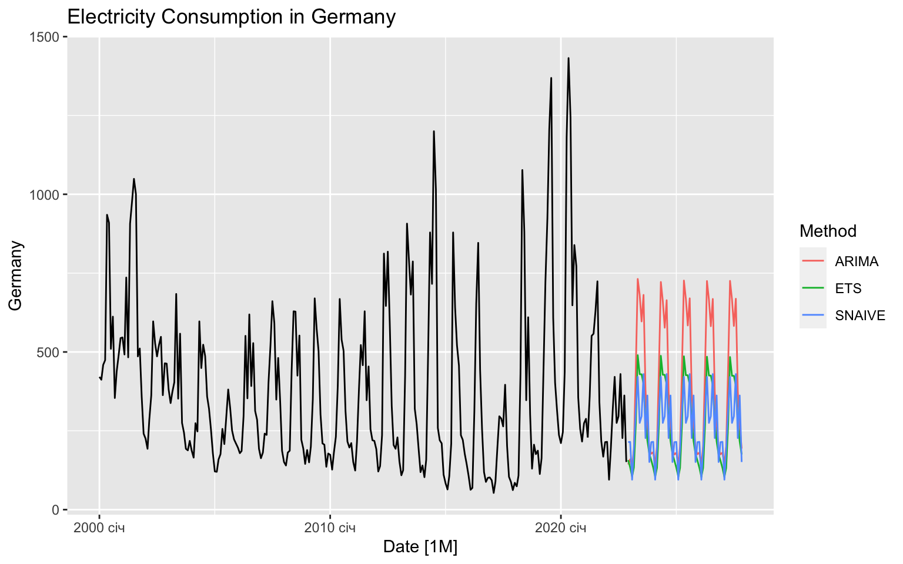
gg_tsresiduals(data_fit_au_e) + labs(title = "ETS Austria residuals analysis")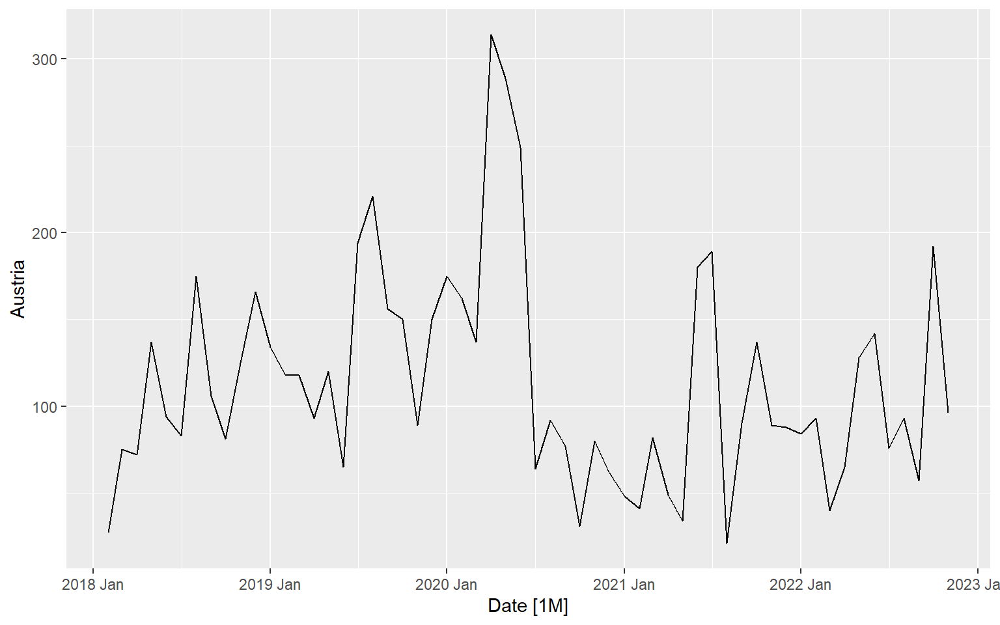
gg_tsresiduals(data_fit_au_n) + labs(title = "SNAIVE Austria residuals analysis")## Warning: Removed 12 rows containing missing values (`geom_line()`).## Warning: Removed 12 rows containing missing values (`geom_point()`).## Warning: Removed 12 rows containing non-finite values (`stat_bin()`).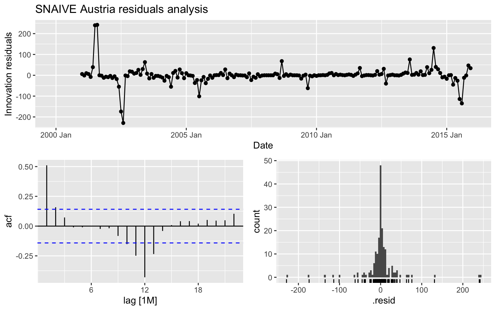
France
France_since_2015 <- data_elec %>% select(Date,France) %>% filter(Date >= as.Date("2015-01-01"))## Warning: There was 1 warning in `filter()`.
## ℹ In argument: `Date >= as.Date("2015-01-01")`.
## Caused by warning:
## ! Incompatible methods (">=.vctrs_vctr", ">=.Date") for ">="Testing Models
Below is the plot of how well each model fits the data based on a 60-period prediction starting from 2016.
#Split the data
training_fr <- data_elec %>% select(Date, France) %>% filter(Date < as.Date("2016-01-01"))## Warning: There was 1 warning in `filter()`.
## ℹ In argument: `Date < as.Date("2016-01-01")`.
## Caused by warning:
## ! Incompatible methods ("<.vctrs_vctr", "<.Date") for "<"test_fr <- data_elec %>% select(Date, France) %>% filter(Date >= as.Date("2016-01-01"))## Warning: There was 1 warning in `filter()`.
## ℹ In argument: `Date >= as.Date("2016-01-01")`.
## Caused by warning:
## ! Incompatible methods (">=.vctrs_vctr", ">=.Date") for ">="# Fit ARIMA model and generate forecasts
data_fit_fr_a <- training_fr %>%
model(ARIMA(France))
forecasts_fr_a <- data_fit_fr_a %>%
forecast(h = 60)
# Fit ETS model and generate forecasts
data_fit_fr_e <- training_fr %>%
model(ETS(France))
forecasts_fr_e <- data_fit_fr_e %>%
forecast(h = 60)
# Fit seasonal naive model and generate forecasts
data_fit_fr_n <- training_fr %>%
model(SNAIVE(France))
forecasts_fr_n <- data_fit_fr_n %>%
forecast(h = 60)
# Combine forecasts into a single data frame
all_forecasts_fr <- bind_rows(
data.frame(Date = forecasts_fr_a$Date, Method = "ARIMA", Forecast = forecasts_fr_a$.mean),
data.frame(Date = forecasts_fr_e$Date, Method = "ETS", Forecast = forecasts_fr_e$.mean),
data.frame(Date = forecasts_fr_n$Date, Method = "SNAIVE", Forecast = forecasts_fr_n$.mean))
# Plot all three sets of forecasts together
data_elec %>% autoplot(France) +
geom_line(data = all_forecasts_fr, aes(x = Date, y = Forecast, color = Method)) +
labs(title = "Electricity Demand in France")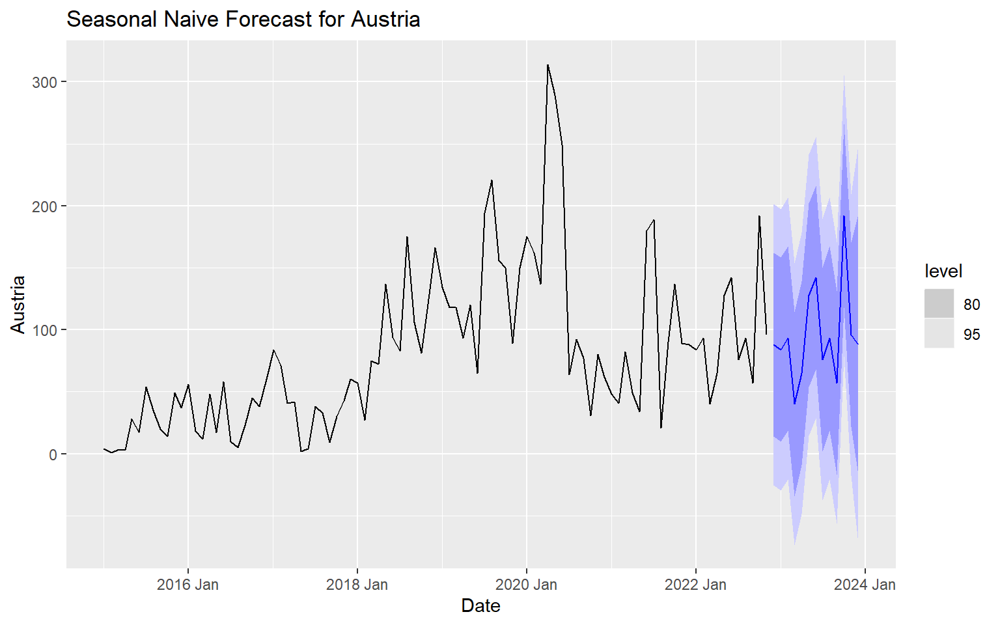
Measuring Model Accuracy
According to the accuracy table below, RMSE, MAE, and other indicators, ETS has the lowest values on the test data. However, ARIMA has lower values of AIC = 2558.88, AICc = 2559.46, and BIC=2582.07 than the ETS model.
#Accuracy
france_accuracy_a <-data_fit_fr_a %>%
refit(test_fr) %>%
accuracy()
france_accuracy_e <-data_fit_fr_e %>%
refit(test_fr) %>%
accuracy()
france_accuracy_n <-data_fit_fr_n %>%
refit(test_fr) %>%
accuracy()
france_accuracy_table <- rbind(
data.frame(france_accuracy_a),
data.frame(france_accuracy_e),
data.frame(france_accuracy_n))
#AIC
report(data_fit_fr_a)## Series: France
## Model: ARIMA(1,1,4)(0,0,1)[12]
##
## Coefficients:
## ar1 ma1 ma2 ma3 ma4 sma1
## 0.0186 -0.4859 -0.1850 -0.0946 -0.1620 0.1771
## s.e. 0.4208 0.4161 0.2162 0.1137 0.1172 0.0764
##
## sigma^2 estimated as 15135: log likelihood=-1188.05
## AIC=2390.09 AICc=2390.7 BIC=2412.86france_accuracy_table## .model .type ME RMSE MAE MPE MAPE
## 1 ARIMA(France) Training 0.4465108 208.4824 169.0814 -30.99631 59.28774
## 2 ETS(France) Training -7.7226182 181.6390 146.1496 -30.05412 53.91812
## 3 SNAIVE(France) Training -7.8450704 273.8479 216.0141 -35.68783 76.53401
## MASE RMSSE ACF1
## 1 0.7827331 0.7613072 -0.07489327
## 2 0.6765742 0.6632845 0.14238978
## 3 1.0000000 1.0000000 0.14446626report(data_fit_fr_e)## Series: France
## Model: ETS(M,N,M)
## Smoothing parameters:
## alpha = 0.1672851
## gamma = 0.0001002813
##
## Initial states:
## l[0] s[0] s[-1] s[-2] s[-3] s[-4] s[-5] s[-6]
## 170.609 1.250038 0.9416617 1.095887 1.04379 1.14645 1.291704 0.9937027
## s[-7] s[-8] s[-9] s[-10] s[-11]
## 0.6362197 0.6065504 0.7543347 1.13727 1.102391
##
## sigma^2: 0.2439
##
## AIC AICc BIC
## 2844.032 2846.759 2892.894Residuals
The output below also suggests that the ARIMA model did well in capturing all the dynamics in data, as the residuals seem to be white noise.
gg_tsresiduals(data_fit_fr_a) + labs(title = "ARIMA France residuals analysis")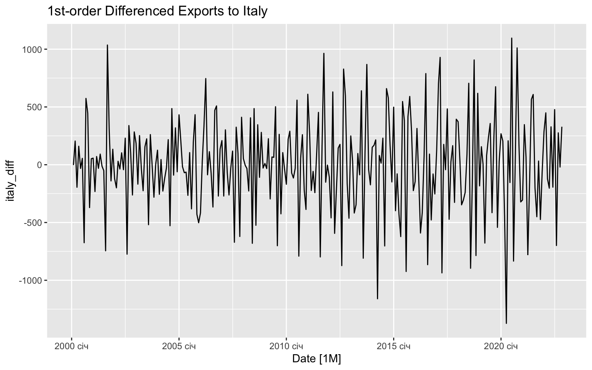
gg_tsresiduals(data_fit_fr_e) + labs(title = "ETS France residuals analysis")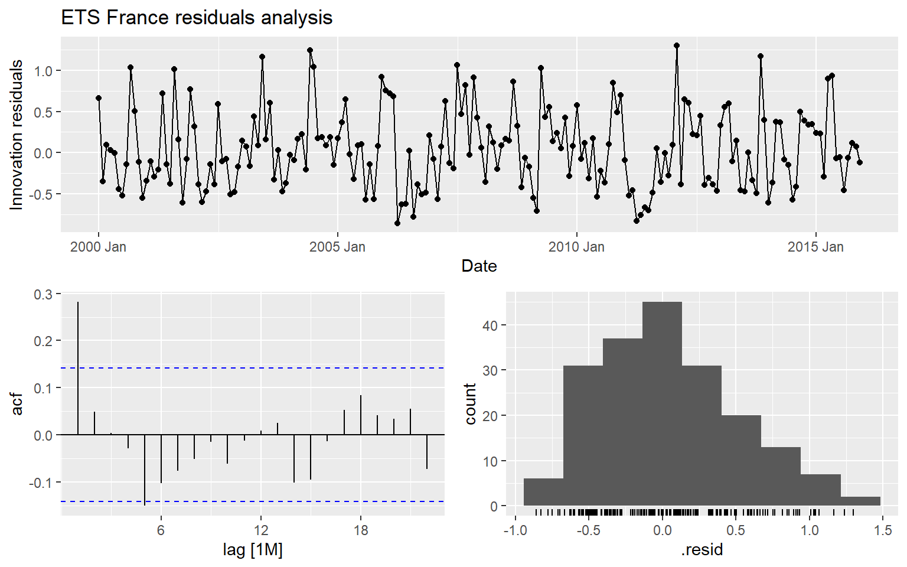
gg_tsresiduals(data_fit_fr_n) + labs(title = "SNAIVE France residuals analysis")## Warning: Removed 12 rows containing missing values (`geom_line()`).## Warning: Removed 12 rows containing missing values (`geom_point()`).## Warning: Removed 12 rows containing non-finite values (`stat_bin()`).
Lichtenstein
- ETS creates a negative value forecast, I will just set the negative forecast values to 0.
- Maybe should find a better way to use ETS (by not allowing it to drop below 0) or just use other models
We have selected S-naive,S-ARIMA In general, S-ARIMA is more suitable for complex time series with trends, seasonality, and other patterns, while S-naive is simpler and more appropriate for time series with stable and predictable seasonal patterns.
data_elec %>% autoplot(Lichtenstein) +
ggtitle("Exports from Switzerland to Lichtenstein") +
ylab("GWt") + xlab("Month")
# Investigating Lichtenstein closely before 2008
Lichtenstein_before_2008 <- data_elec %>%
select(Date,Lichtenstein) %>%
filter(Date <= as.Date("2008-01-01"))## Warning: There was 1 warning in `filter()`.
## ℹ In argument: `Date <= as.Date("2008-01-01")`.
## Caused by warning:
## ! Incompatible methods ("<=.vctrs_vctr", "<=.Date") for "<="autoplot(Lichtenstein_before_2008)## Plot variable not specified, automatically selected `.vars = Lichtenstein`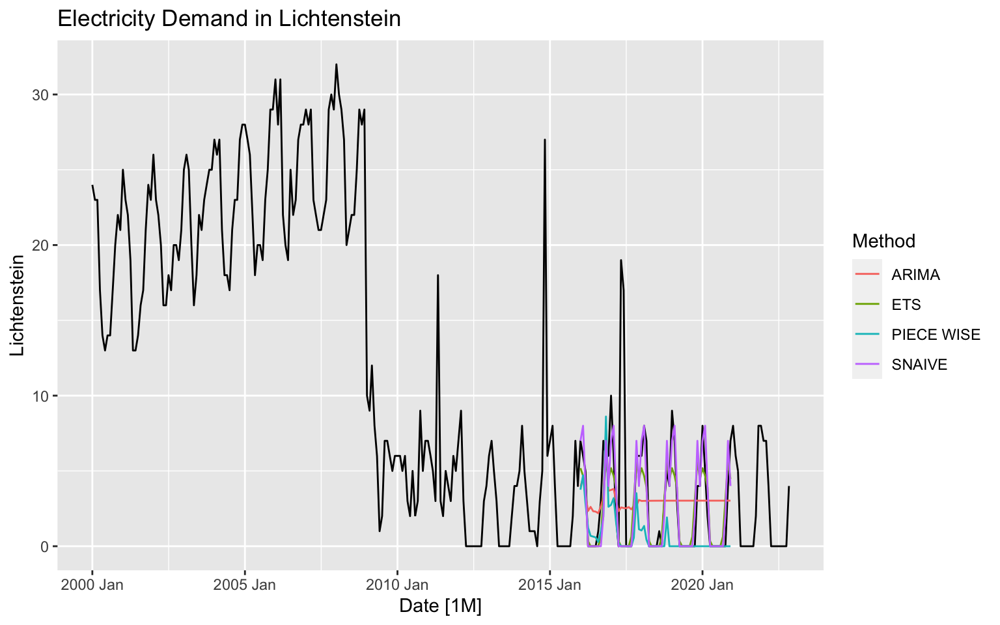
# Investigating Lichtenstein closely after 2008
Lichtenstein_after_2008 <- data_elec %>%
select(Date,Lichtenstein) %>%
filter(Date >= as.Date("2008-01-01"))## Warning: There was 1 warning in `filter()`.
## ℹ In argument: `Date >= as.Date("2008-01-01")`.
## Caused by warning:
## ! Incompatible methods (">=.vctrs_vctr", ">=.Date") for ">="autoplot(Lichtenstein_after_2008)## Plot variable not specified, automatically selected `.vars = Lichtenstein`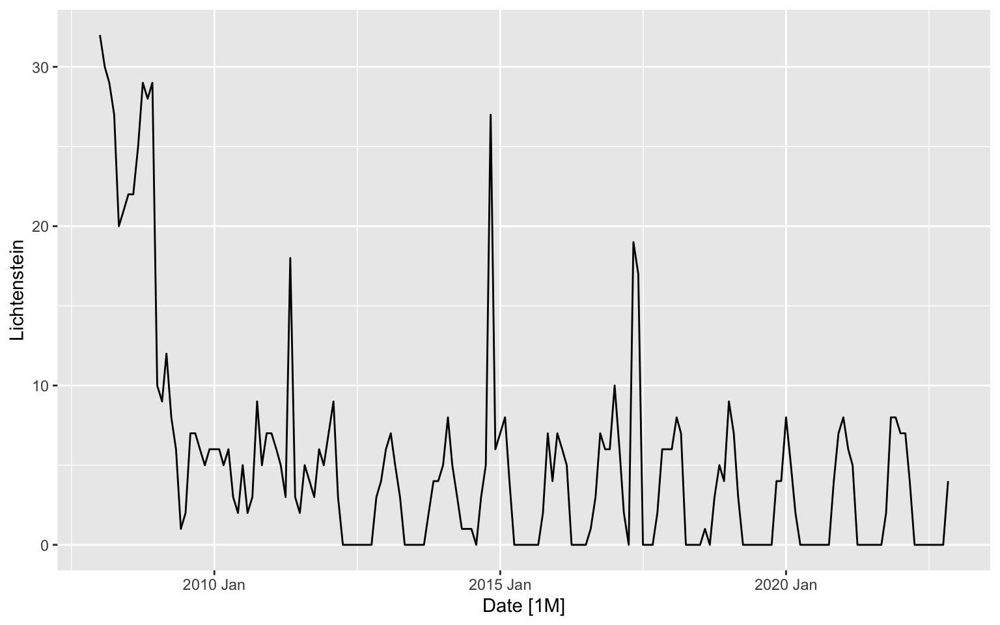 Comment
Check the Stationarity by using Unit Root Test
# Load the required package
library(tseries)## Registered S3 method overwritten by 'quantmod':
## method from
## as.zoo.data.frame zoo# Convert the data into a time series object
Lichtenstein_since_2010 <- data_elec %>% select(Date,Lichtenstein) %>% filter(Date >= as.Date("2010-01-01"))## Warning: There was 1 warning in `filter()`.
## ℹ In argument: `Date >= as.Date("2010-01-01")`.
## Caused by warning:
## ! Incompatible methods (">=.vctrs_vctr", ">=.Date") for ">="ts_Lich <- ts(Lichtenstein_since_2010$Lichtenstein, frequency=12, start=c(2010,1))
# Check for linearity using ADF test
adf.test(ts_Lich)## Warning in adf.test(ts_Lich): p-value smaller than printed p-value##
## Augmented Dickey-Fuller Test
##
## data: ts_Lich
## Dickey-Fuller = -6.5052, Lag order = 5, p-value = 0.01
## alternative hypothesis: stationaryLichtenstein_since_2010 %>% features(Lichtenstein_since_2010, unitroot_kpss)## # A tibble: 1 × 2
## kpss_stat kpss_pvalue
## <dbl> <dbl>
## 1 3.20 0.01In order to observe the stationarity assumption of Lichtenstein time serie. We have run the Unit Root Test which is a statistical test that checks for the presence of a unit root in a time series, which is an indication of non-stationarity.
Unit Root Test has the following hypothesis: \[H_0:\] Data is stationary
\[H_a:\] Data is non-stationary
In this case the Unit Root Test was performed on a the data Lichtenstein, and the test statistic was 3.20. The p-value of the test was 0.01 which indicates strong evidence to reject the null hypothesis of stationarity. Thus Lichtenstein time serie is non-stationary.
Based on it, we can use methods that assume non-stationarity, such as Random Walk Model, Autoregressive Integrated Moving Average (ARIMA), Exponential smoothing methods, Moving average models, Vector autoregression(VAR), ARIMA,SARIMA.
Model selection
Based on the previous analysis Lichtenstein data is stationary time series with high presence of trend and seasonality, thus we can consider using a simple ARIMA, Piece-Wise and . S-naive.
#Split the data
training_Licht <- data_elec %>% select(Date, Lichtenstein) %>% filter(Date < as.Date("2016-01-01"))## Warning: There was 1 warning in `filter()`.
## ℹ In argument: `Date < as.Date("2016-01-01")`.
## Caused by warning:
## ! Incompatible methods ("<.vctrs_vctr", "<.Date") for "<"test_Licht <- data_elec %>% select(Date, Lichtenstein) %>% filter(Date >= as.Date("2016-01-01"))## Warning: There was 1 warning in `filter()`.
## ℹ In argument: `Date >= as.Date("2016-01-01")`.
## Caused by warning:
## ! Incompatible methods (">=.vctrs_vctr", ">=.Date") for ">="# Fit ARIMA model and generate forecasts
data_fit_Licht_a <- training_Licht %>%
model(ARIMA(Lichtenstein))
forecasts_Licht_a <- data_fit_Licht_a %>%
forecast(h = 60)
# Fit ETS model and generate forecasts
data_fit_Licht_e <- training_Licht %>%
model(ETS(Lichtenstein))
forecasts_Licht_e <- data_fit_Licht_e %>%
forecast(h = 60)
# Fit seasonal naive model and generate forecasts
data_fit_Licht_n <- training_Licht %>%
model(SNAIVE(Lichtenstein))
forecasts_Licht_n <- data_fit_Licht_n %>%
forecast(h = 60)
# Fit piece wise model and generate forecasts
data_fit_Licht_pw <- training_Licht %>%
model(piecewise = ARIMA(Lichtenstein ~ trend(knots = c(2008, 2009,2015,2016))))## Warning: Provided exogenous regressors are rank deficient, removing regressors:
## `trend(knots = c(2008, 2009, 2015, 2016))trend_1649`, `trend(knots = c(2008,
## 2009, 2015, 2016))trend_1650`, `trend(knots = c(2008, 2009, 2015,
## 2016))trend_1656`, `trend(knots = c(2008, 2009, 2015, 2016))trend_1657`forecasts_Licht_pw <- data_fit_Licht_pw%>%
forecast(h = 60)
# Combine forecasts into a single data frame
all_forecasts_Licht <- bind_rows(
data.frame(Date = forecasts_Licht_a$Date, Method = "ARIMA", Forecast = forecasts_Licht_a$.mean),
data.frame(Date = forecasts_Licht_e$Date, Method = "ETS", Forecast = forecasts_Licht_e$.mean),
data.frame(Date = forecasts_Licht_n$Date, Method = "SNAIVE", Forecast = forecasts_Licht_n$.mean),
data.frame(Date = forecasts_Licht_pw$Date, Method = "PIECE WISE", Forecast = forecasts_Licht_pw$.mean))
# Plot all three sets of forecasts together
data_elec %>% autoplot(Lichtenstein) +
geom_line(data = all_forecasts_Licht, aes(x = Date, y = Forecast, color = Method)) +
labs(title = "Electricity Demand in Lichtenstein") ###Observing the accuracy
###Observing the accuracy
#Accuracy
Licht_accuracy_a <-data_fit_Licht_a %>%
refit(test_Licht) %>%
accuracy()
Licht_accuracy_e <-data_fit_Licht_e %>%
refit(test_Licht) %>%
accuracy()
Licht_accuracy_n <-data_fit_Licht_n %>%
refit(test_Licht) %>%
accuracy()
Licht_accuracy_pw <- data_fit_Licht_pw %>%
refit(test_Licht) %>%
accuracy()## Warning: There was 1 warning in `mutate()`.
## ℹ In argument: `piecewise = (function (object, ...) ...`.
## Caused by warning:
## ! Provided exogenous regressors are rank deficient, removing regressors: `trend(knots = c(2008, 2009, 2015, 2016))trend_1649`, `trend(knots = c(2008, 2009, 2015, 2016))trend_1650`, `trend(knots = c(2008, 2009, 2015, 2016))trend_1656`, `trend(knots = c(2008, 2009, 2015, 2016))trend_1657`Licht_accuracy_table <- rbind(
data.frame(Licht_accuracy_a),
data.frame(Licht_accuracy_e),
data.frame(Licht_accuracy_n),
data.frame(Licht_accuracy_pw))
Licht_accuracy_table## .model .type ME RMSE MAE MPE MAPE
## 1 ARIMA(Lichtenstein) Training -0.11762505 3.344647 2.033608 NaN Inf
## 2 ETS(Lichtenstein) Training -0.02173764 2.888300 1.755176 NaN Inf
## 3 SNAIVE(Lichtenstein) Training -0.15492958 4.613208 2.014085 -Inf Inf
## 4 piecewise Training 0.41939646 3.334844 2.043512 NaN Inf
## MASE RMSSE ACF1
## 1 1.0096936 0.7250153 0.1688491
## 2 0.8714512 0.6260936 0.2283578
## 3 1.0000000 1.0000000 0.4554619
## 4 1.0146109 0.7228904 0.1917471#AIC
report(data_fit_Licht_a)## Series: Lichtenstein
## Model: ARIMA(1,1,2)(0,0,2)[12]
##
## Coefficients:
## ar1 ma1 ma2 sma1 sma2
## 0.7733 -1.0998 0.1674 0.2296 0.2115
## s.e. 0.1341 0.1552 0.1085 0.0746 0.0752
##
## sigma^2 estimated as 13.09: log likelihood=-514.99
## AIC=1041.98 AICc=1042.44 BIC=1061.5report(data_fit_Licht_e)## Series: Lichtenstein
## Model: ETS(A,N,A)
## Smoothing parameters:
## alpha = 0.4983791
## gamma = 0.0001000103
##
## Initial states:
## l[0] s[0] s[-1] s[-2] s[-3] s[-4] s[-5] s[-6]
## 19.2404 2.656075 3.881139 1.299069 -1.182925 -2.807692 -3.167366 -4.389907
## s[-7] s[-8] s[-9] s[-10] s[-11]
## -3.179325 -1.468588 2.114574 2.867806 3.37714
##
## sigma^2: 11.0411
##
## AIC AICc BIC
## 1486.015 1488.742 1534.878report(data_fit_Licht_n)## Series: Lichtenstein
## Model: SNAIVE
##
## sigma^2: 38.3321report(data_fit_Licht_pw)## Series: Lichtenstein
## Model: LM w/ ARIMA(1,0,1)(2,0,0)[12] errors
##
## Coefficients:
## ar1 ma1 sar1 sar2
## 0.8984 -0.2993 0.2682 0.2445
## s.e. 0.0370 0.0897 0.0711 0.0801
## trend(knots = c(2008, 2009, 2015, 2016))trend intercept
## -0.1089 24.4159
## s.e. 0.0444 5.3267
##
## sigma^2 estimated as 12.37: log likelihood=-513.02
## AIC=1040.04 AICc=1040.65 BIC=1062.84A low AIC value is desirable as it indicates a better trade-off between model fit and complexity. Thus
Residuals
Interesting to examine any outliers or extreme values in the residuals.
gg_tsresiduals(data_fit_Licht_a) + labs(title = "ARIMA Lichtenstein residuals analysis")
gg_tsresiduals(data_fit_Licht_e) + labs(title = "ETS Lichtenstein residuals analysis")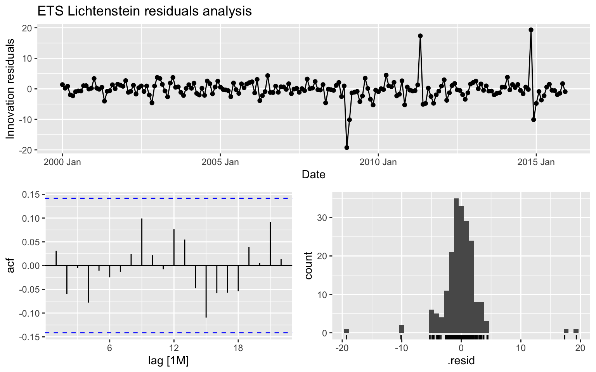
gg_tsresiduals(data_fit_Licht_n) + labs(title = "SNAIVE Lichtenstein residuals analysis")## Warning: Removed 12 rows containing missing values (`geom_line()`).## Warning: Removed 12 rows containing missing values (`geom_point()`).## Warning: Removed 12 rows containing non-finite values (`stat_bin()`).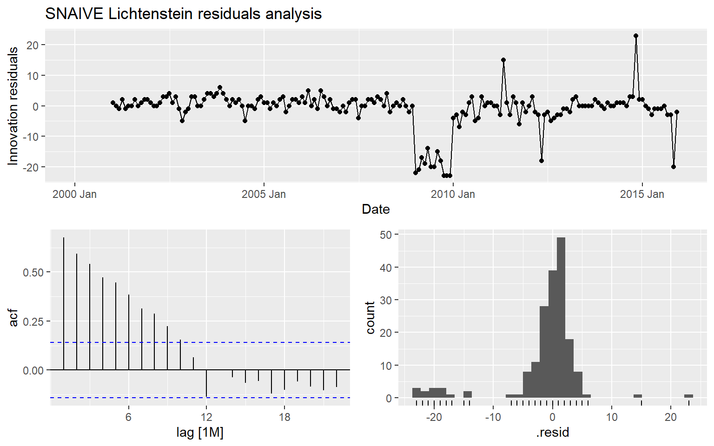
gg_tsresiduals(data_fit_Licht_pw) + labs(title = "PIECE WISE Lichtenstein residuals analysis")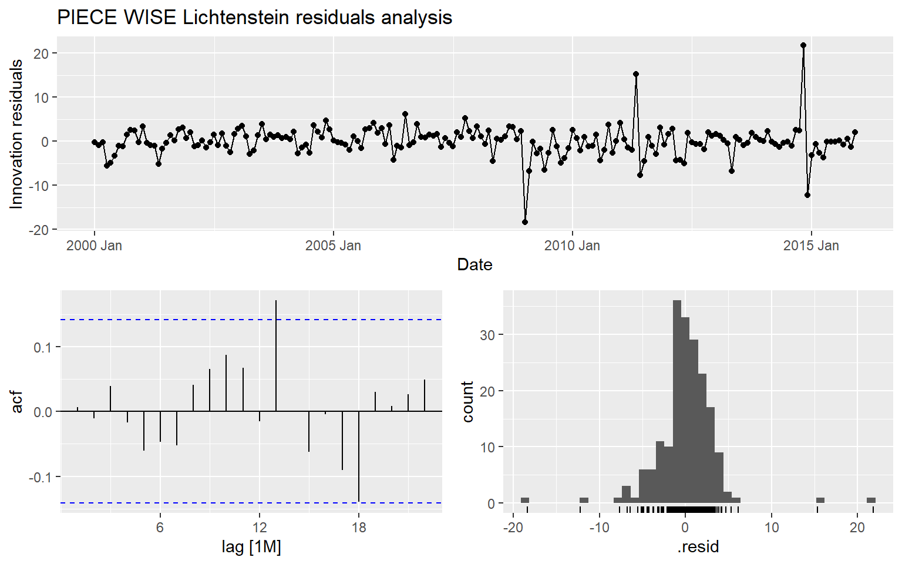
Although all of these metrics are valuable for evaluating forecast accuracy, we have chosen to place greater emphasis on the AIC. This decision is based on the fact that the AIC takes into account both the model’s fit to the data and its complexity. Consequently, we have selected the Piecewise model as the preferred choice for forecasting electricity demand in Lichtenstein
Piecewise
# Modelling ARIMA automatically
pw_Licht <- data_elec %>%
select(Lichtenstein) %>%
model(piecewise = ARIMA(Lichtenstein ~ trend(knots = c(2008, 2009,2015,2016))))## Warning: Provided exogenous regressors are rank deficient, removing regressors:
## `trend(knots = c(2008, 2009, 2015, 2016))trend_1649`, `trend(knots = c(2008,
## 2009, 2015, 2016))trend_1650`, `trend(knots = c(2008, 2009, 2015,
## 2016))trend_1656`, `trend(knots = c(2008, 2009, 2015, 2016))trend_1657`# Getting the Accuracy scores for models
report(pw_Licht)## Series: Lichtenstein
## Model: LM w/ ARIMA(1,0,2)(2,0,0)[12] errors
##
## Coefficients:
## ar1 ma1 ma2 sar1 sar2
## 0.9166 -0.2686 -0.1848 0.2716 0.2005
## s.e. 0.0377 0.0789 0.0775 0.0593 0.0596
## trend(knots = c(2008, 2009, 2015, 2016))trend intercept
## -0.0853 22.8736
## s.e. 0.0252 4.2039
##
## sigma^2 estimated as 11.95: log likelihood=-729.65
## AIC=1475.3 AICc=1475.84 BIC=1504.23# Forecasting using the models
forecast_pw_Licht <- pw_Licht %>% forecast(h = 13)
#Checking the residuals before forecasting
pw_Licht %>% gg_tsresiduals(lag_max = 36) + labs(title = "piecewise Lichtenstein residuals analysis")
# Graphing the forecast
pw_Licht %>% forecast(h = 13) %>% autoplot(Lichtenstein_after_2008) +
labs(title = "piecewise Forecast for Lichtenstein")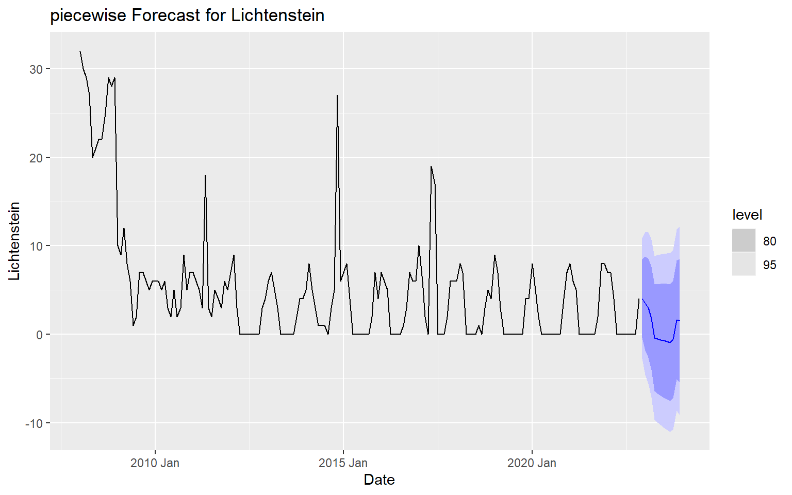
#Extracting the forecasted values
forecast_table_Lichtenstein_a <- data.frame(Model = c("piecewise"),
Forecast_Values = c(forecast_pw_Licht))
forecast_table_Lichtenstein_a <- forecast_table_Lichtenstein_a %>% select(Forecast_Values..mean)
colnames(forecast_table_Lichtenstein_a)[1] <- "Lichtenstein_piecewise"
forecast_table_Lichtenstein_a## Lichtenstein_piecewise
## 1 4.0432363
## 2 3.5136346
## 3 2.9764597
## 4 1.8325656
## 5 -0.3778268
## 6 -0.4930856
## 7 -0.6024843
## 8 -0.7065121
## 9 -0.8056170
## 10 -0.9002097
## 11 -0.5897297
## 12 1.6128127
## 13 1.5413636# #install.packages("forecast")
# library(forecast)
# # Fit an ARIMA model to the data
# arima_model <- auto.arima(Lichtenstein)
#
# # Forecast future values
# forecast_data <- forecast(arima_model, h = 12) # Forecasting for 12 months ahead
#
# # Apply post-processing to enforce the constraint
# forecast_values <- forecast_data$mean
# forecast_values[forecast_values < 0] <- 0
#
# # Print the forecasted values
# print(forecast_values)
# autoplot(forecast_values)
#
#
# ### Piece-wise ARIMA
#
# ggplot(Lichtenstein_after_2008, aes(x = Date, y = Lichtenstein)) + geom_line() + geom_smooth(method = "lm", se = FALSE)
#
# #TS for Lin
#
# fit_trends_lin <- Lichtenstein_after_2008 %>% model(linear = TSLM(Lichtenstein ~ trend())) %>% forecast(h=60)
# fit_trends_lin_values <- fit_trends_lin$.mean
# fit_trends_lin_values[fit_trends_lin_values < 0] <- 0
# print(fit_trends_lin_values)
#
# #TS for Expo
#
# fit_trends_ex <- Lichtenstein_after_2008 %>% model(exponential = TSLM(log(Lichtenstein) ~ trend())) %>% forecast(h=60)
# fit_trends_ex_values <- fit_trends_ex$.mean
# fit_trends_ex_values[fit_trends_ex_values < 0] <- 0
# print(fit_trends_ex_values)
#
#
#
# fit_trends_piecewise <- Lichtenstein_after_2008 %>% model(piecewise = TSLM(Lichtenstein ~ trend(knots = c(2008)))
# )
#
#
# fit_trends <- data_elec %>% model(#linear = TSLM(Lichtenstein ~ trend()),
# # exponential = TSLM(log(Lichtenstein) ~ trend()),
# piecewise = TSLM(Lichtenstein ~ trend(knots = c(2008,2009)))
# )
#
# fc_trends <- fit_trends %>% forecast(h=13)
#
# autoplot(fc_trends)
#
#
# Lichtenstein_after_2008 %>%
# autoplot(Lichtenstein) + geom_line(aes(y=.fitted, colour=.model), data = fitted(fit_trends)) + autolayer(fc_trends, alpha = 0.5, level = 95) +
# ylab("Electricity Consumptions") +
# guides(colour = guide_legend(title = "Model"))#
# #Split the data
# training_lich <- Lichtenstein_after_2008 %>% select(Date,Lichtenstein) %>% filter(Date < as.Date("2015-01-01"))
# test_lich <- Lichtenstein_after_2008 %>% select(Date,Lichtenstein) %>% filter(Date >= as.Date("2015-01-01"))
#
# # Fit ARIMA model and generate forecasts
# data_fit_lich_arima <- training_lich %>%
# model(ARIMA(Lichtenstein))
# forecasts_lich_arima <- data_fit_lich_arima %>%
# forecast(h = 140)
#
# # Fit seasonal naive model and generate forecasts
# data_fit_lich_naive <- training_lich %>%
# model(SNAIVE(Lichtenstein))
# forecasts_Lich_naive <- data_fit_lich_naive %>%
# forecast(h = 140)
#
# # Fit seasonal naive model and generate forecasts
# data_fit_lich_TSLM <- training_lich %>%
# model(TSLM(Lichtenstein))
# forecasts_Lich_TSLM <- data_fit_lich_TSLM %>%
# forecast(h = 140)
#
# # Fit seasonal naive model and generate forecasts
# data_fit_lich_ets<- training_lich %>%
# model(ets(Lichtenstein))
# forecasts_Lich_ets <- data_fit_lich_ets %>%
# forecast(h = 13)
#
# ets_lichtenstein <- data_elec %>%model(ETS(Lichtenstein))
# report(ets_lichtenstein)
# forecast_ets_lichtenstein<- ets_lichtenstein %>% forecast(h = 13)
#
# ets_lichtenstein %>% forecast(h = 13) %>% autoplot(Lichtenstein_since_2010)+
# labs(title = "ETS ANA Forecast for Lichtenstein")
#
#
# # Combine forecasts into a single data frame
# all_forecasts_Lich <- bind_rows(
# data.frame(Date = forecasts_lich_arima$Date, Method = "ARIMA", Forecast = forecasts_lich_arima$.mean),
# data.frame(Date = forecasts_Lich_naive$Date, Method = "SNAIVE", Forecast = forecasts_Lich_naive$.mean),
# data.frame(Date = forecasts_Lich_TSLM$Date, Method = "Price wise", Forecast = forecasts_Lich_TSLM$.mean)
# )
#
# # Plot all three sets of forecasts togetherARIMA model
ETS Model (thank you but not usefull anymore)
# #Investigating Lichtenstein closely since 2010, because it seems like something changed -> perhaps should use Piecewise!!!
# autoplot(Lichtenstein_since_2010)
#
# #Modelling ets automatically
#
# fit_trends <- data_elec %>% model(linear = TSLM(Lichtenstein ~ trend()),
# exponential = TSLM(log(Lichtenstein) ~ trend()),
# piecewise = TSLM(Lichtenstein ~ trend(knots = c(2005, 2015)))
# )
#
# linear_lichtenstein <- data_elec %>%
# select(Lichtenstein) %>%
# model(TSLM(Lichtenstein))
#
# #Getting the Accuracy scores for models
# report(linear_lichtenstein)
#
# #Forecasting using the models
# forecast_linear_lichtenstein<- linear_lichtenstein %>% forecast(h = 13)
#
# #Graphing the forecast
# linear_lichtenstein %>% forecast(h = 13) %>% autoplot(Lichtenstein)
#
#
# #Extracting the forecasted values
#
# forecast_table_lichtenstein <- data.frame(Model = c("ETS (ANA)"),
# Forecast_Values = c(forecast_ets_lichtenstein))
#
# forecast_table_lichtenstein <- forecast_table_lichtenstein %>% select(Forecast_Values..mean)
#
# colnames(forecast_table_lichtenstein)[1] <- "Lichtenstein_ets_ANA"
#
# # replace negative values with 0
# forecast_table_lichtenstein[forecast_table_lichtenstein < 0] <- 0
#
#
# #components(ets_lichtenstein) %>% autoplot()Since we can’t have negative values, I decided to just set the negative ones to 0.
This forecast actually doesn’t look great. I would expect the next upward bounce to be of similar amplitude as the previous ones, but it seems like the forecast of the next bounce is only half the amplitude of the previous ones.
Total
Total_since_2015 <- data_elec %>% select(Date,Total) %>% filter(Date >= as.Date("2015-01-01"))## Warning: There was 1 warning in `filter()`.
## ℹ In argument: `Date >= as.Date("2015-01-01")`.
## Caused by warning:
## ! Incompatible methods (">=.vctrs_vctr", ">=.Date") for ">="Testing Models
Below is the plot of how well each model fits the data based on a 60-period prediction starting from 2016.
#Split the data
training_tot <- data_elec %>% select(Date, Total) %>% filter(Date < as.Date("2016-01-01"))## Warning: There was 1 warning in `filter()`.
## ℹ In argument: `Date < as.Date("2016-01-01")`.
## Caused by warning:
## ! Incompatible methods ("<.vctrs_vctr", "<.Date") for "<"test_tot <- data_elec %>% select(Date, Total) %>% filter(Date >= as.Date("2016-01-01"))## Warning: There was 1 warning in `filter()`.
## ℹ In argument: `Date >= as.Date("2016-01-01")`.
## Caused by warning:
## ! Incompatible methods (">=.vctrs_vctr", ">=.Date") for ">="# Fit ARIMA model and generate forecasts
data_fit_tot_a <- training_tot %>%
model(ARIMA(Total))
forecasts_tot_a <- data_fit_tot_a %>%
forecast(h = 60)
# Fit ETS model and generate forecasts
data_fit_tot_e <- training_tot %>%
model(ETS(Total))
forecasts_tot_e <- data_fit_tot_e %>%
forecast(h = 60)
# Fit seasonal naive model and generate forecasts
data_fit_tot_n <- training_tot %>%
model(SNAIVE(Total))
forecasts_tot_n <- data_fit_tot_n %>%
forecast(h = 60)
# Combine forecasts into a single data frame
all_forecasts_tot <- bind_rows(
data.frame(Date = forecasts_tot_a$Date, Method = "ARIMA", Forecast = forecasts_tot_a$.mean),
data.frame(Date = forecasts_tot_e$Date, Method = "ETS", Forecast = forecasts_tot_e$.mean),
data.frame(Date = forecasts_tot_n$Date, Method = "SNAIVE", Forecast = forecasts_tot_n$.mean))
# Plot all three sets of forecasts together
data_elec %>% autoplot(Total) +
geom_line(data = all_forecasts_tot, aes(x = Date, y = Forecast, color = Method)) +
labs(title = "Electricity Demand to all countries")
Measuring Model Accuracy
According to the accuracy table below, RMSE, MAE, and other indicators, ETS has the lowest values on the test data. However, ARIMA has lower values of AIC=2683.45, AICc=2683.9, and BIC=2702.99 than the ETS model.
#Accuracy
total_accuracy_a <-data_fit_tot_a %>%
refit(test_tot) %>%
accuracy()
total_accuracy_e <-data_fit_tot_e %>%
refit(test_tot) %>%
accuracy()
total_accuracy_n <-data_fit_tot_n %>%
refit(test_tot) %>%
accuracy()
total_accuracy_table <- rbind(
data.frame(total_accuracy_a),
data.frame(total_accuracy_e),
data.frame(total_accuracy_n))
#AIC
report(data_fit_tot_a)## Series: Total
## Model: ARIMA(1,0,1)(2,0,0)[12] w/ mean
##
## Coefficients:
## ar1 ma1 sar1 sar2 constant
## 0.7159 -0.2076 0.3750 0.3755 195.5746
## s.e. 0.0912 0.1344 0.0685 0.0708 11.2588
##
## sigma^2 estimated as 63131: log likelihood=-1335.72
## AIC=2683.45 AICc=2683.9 BIC=2702.99total_accuracy_table## .model .type ME RMSE MAE MPE MAPE
## 1 ARIMA(Total) Training -24.755873 330.0999 265.2221 -2.475478 10.561219
## 2 ETS(Total) Training -4.567152 284.6104 226.3630 -1.089216 8.842026
## 3 SNAIVE(Total) Training -9.154930 538.1098 433.9155 -2.272180 16.742385
## MASE RMSSE ACF1
## 1 0.6112298 0.6134435 -0.032412752
## 2 0.5216754 0.5289076 0.009325172
## 3 1.0000000 1.0000000 0.555685440report(data_fit_tot_e)## Series: Total
## Model: ETS(A,N,A)
## Smoothing parameters:
## alpha = 0.5690082
## gamma = 0.0002217215
##
## Initial states:
## l[0] s[0] s[-1] s[-2] s[-3] s[-4] s[-5] s[-6]
## 2735.222 -30.5261 -39.40677 146.1547 -77.94267 -290.9088 509.1663 81.12738
## s[-7] s[-8] s[-9] s[-10] s[-11]
## 83.81698 -205.6554 -47.17994 -126.659 -1.986777
##
## sigma^2: 60986.36
##
## AIC AICc BIC
## 3140.436 3143.164 3189.299Residuals
The output below also suggests that the ARIMA model did well in capturing all the dynamics in data, as the residuals seem to be white noise.
gg_tsresiduals(data_fit_tot_a) + labs(title = "ARIMA Total residuals analysis")
gg_tsresiduals(data_fit_tot_e) + labs(title = "ETS Total residuals analysis")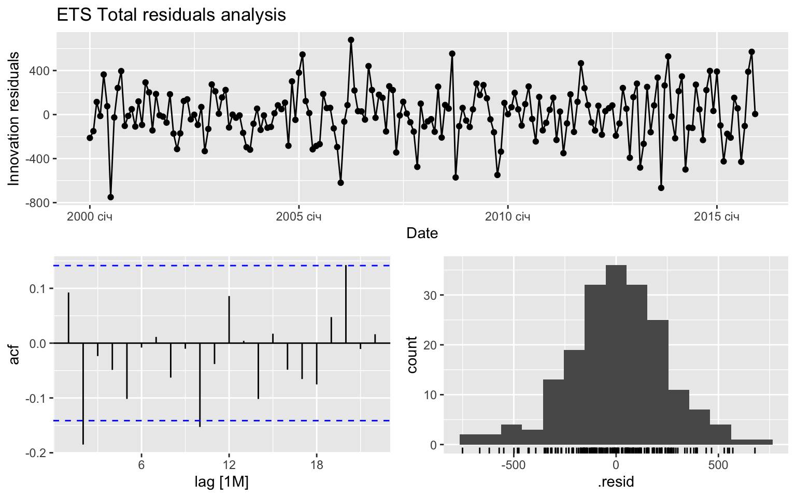
gg_tsresiduals(data_fit_tot_n) + labs(title = "SNAIVE Total residuals analysis")## Warning: Removed 12 rows containing missing values (`geom_line()`).## Warning: Removed 12 rows containing missing values (`geom_point()`).## Warning: Removed 12 rows containing non-finite values (`stat_bin()`).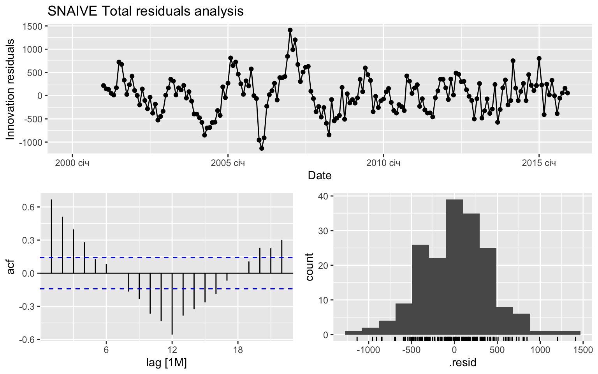
Result
All of these metrics are important for evaluating forecast accuracy. Still, we decided to give more weight to AIC, as this indicator considers both the complexity and the model’s fit. As a result, the ARIMA model is selected to forecast the electricity demand in Germany, Italy, Austria, France, and for all countries together.
Forecast
Germany
# Modelling ARIMA automatically
arima_germany <- data_elec %>%
select(Germany) %>%
model(arima = ARIMA(Germany))
# Forecasting using the models
forecast_arima_germany <- arima_germany %>% forecast(h = 13, level = 90)Checking Residuals
arima_germany %>% gg_tsresiduals(lag_max = 36) + labs(title = "SARIMA Germany residuals analysis")
Graphing the forecast
arima_germany %>% forecast(h = 13) %>% autoplot(Germany_since_2015) +
labs(title = "ARIMA Forecast for Germany")
#Extracting the forecasted values
forecast_table_germany_a <- data.frame(Model = c("ARIMA"),
Forecast_Values = c(forecast_arima_germany))
forecast_table_germany_a <- forecast_table_germany_a %>% select(Forecast_Values.Date,Forecast_Values..mean)
colnames(forecast_table_germany_a)[1] <- "Month"
colnames(forecast_table_germany_a)[2] <- "Germany ARIMA"Forecast Table
forecast_table_germany_a## Month Germany ARIMA
## 1 2022 Dec 143.2646
## 2 2023 Jan 159.3608
## 3 2023 Feb 135.3621
## 4 2023 Mar 190.7662
## 5 2023 Apr 449.9413
## 6 2023 May 731.5511
## 7 2023 Jun 680.7654
## 8 2023 Jul 596.8109
## 9 2023 Aug 680.9398
## 10 2023 Sep 379.6509
## 11 2023 Oct 262.2746
## 12 2023 Nov 195.0101
## 13 2023 Dec 177.4056Italy
# Modelling ARIMA automatically
arima_italy <- data_elec %>%
select(Italy) %>%
model(arima = ARIMA(Italy))
# Forecasting using the models
forecast_arima_italy <- arima_italy %>% forecast(h = 13)Checking Residuals
arima_italy %>% gg_tsresiduals(lag_max = 36) + labs(title = "SARIMA Italy residuals analysis")
Graphing the forecast
arima_italy %>% forecast(h = 13) %>% autoplot(Italy_since_2018) +
labs(title = "ARIMA Forecast for Italy")
#Extracting the forecasted values
forecast_table_italy_a <- data.frame(Model = c("ARIMA"),
Forecast_Values = c(forecast_arima_italy))
forecast_table_italy_a <- forecast_table_italy_a %>% select(Forecast_Values.Date,Forecast_Values..mean)
colnames(forecast_table_italy_a)[1] <- "Month"
colnames(forecast_table_italy_a)[2] <- "Italy ARIMA"Forecast Table
forecast_table_italy_a## Month Italy ARIMA
## 1 2022 Dec 1826.559
## 2 2023 Jan 1830.641
## 3 2023 Feb 2084.348
## 4 2023 Mar 2064.941
## 5 2023 Apr 1763.042
## 6 2023 May 1826.055
## 7 2023 Jun 1930.824
## 8 2023 Jul 2272.030
## 9 2023 Aug 1978.937
## 10 2023 Sep 1936.262
## 11 2023 Oct 1939.172
## 12 2023 Nov 1906.992
## 13 2023 Dec 1816.285Austria
# Modelling ARIMA automatically
arima_austria <- data_elec %>%
select(Austria) %>%
model(arima = ARIMA(Austria))
# Forecasting using the models
forecast_arima_austria <- arima_austria %>% forecast(h = 13)Checking Residuals
arima_austria %>% gg_tsresiduals(lag_max = 36) + labs(title = "SARIMA Austria residuals analysis")
Graphing the forecast
arima_austria %>% forecast(h = 13) %>% autoplot(Austria_since_2015) +
labs(title = "ARIMA Forecast for Austria")
#Extracting the forecasted values
forecast_table_austria_a <- data.frame(Model = c("ARIMA"),
Forecast_Values = c(forecast_arima_austria))
forecast_table_austria_a <- forecast_table_austria_a %>% select(Forecast_Values.Date,Forecast_Values..mean)
colnames(forecast_table_austria_a)[1] <- "Month"
colnames(forecast_table_austria_a)[2] <- "Austria ARIMA"Forecast Table
forecast_table_austria_a## Month Austria ARIMA
## 1 2022 Dec 70.83719
## 2 2023 Jan 98.11923
## 3 2023 Feb 98.11923
## 4 2023 Mar 98.11923
## 5 2023 Apr 98.11923
## 6 2023 May 98.11923
## 7 2023 Jun 98.11923
## 8 2023 Jul 98.11923
## 9 2023 Aug 98.11923
## 10 2023 Sep 98.11923
## 11 2023 Oct 98.11923
## 12 2023 Nov 98.11923
## 13 2023 Dec 98.11923France
# Modelling ARIMA automatically
arima_france <- data_elec %>%
select(France) %>%
model(arima = ARIMA(France))
# Forecasting using the models
forecast_arima_france <- arima_france %>% forecast(h = 13)Checking Residuals
arima_france %>% gg_tsresiduals(lag_max = 36) + labs(title = "SARIMA France residuals analysis")
Graphing the forecast
# Graphing the forecast
arima_france %>% forecast(h = 13) %>% autoplot(France_since_2015) +
labs(title = "ARIMA Forecast for France")
#Extracting the forecasted values
forecast_table_france_a <- data.frame(Model = c("ARIMA"),
Forecast_Values = c(forecast_arima_france))
forecast_table_france_a <- forecast_table_france_a %>% select(Forecast_Values.Date,Forecast_Values..mean)
colnames(forecast_table_france_a)[1] <- "Month"
colnames(forecast_table_france_a)[2] <- "France ARIMA"Forecast Table
forecast_table_france_a## Month France ARIMA
## 1 2022 Dec 263.9312
## 2 2023 Jan 383.6005
## 3 2023 Feb 320.5275
## 4 2023 Mar 351.3831
## 5 2023 Apr 353.5785
## 6 2023 May 350.5107
## 7 2023 Jun 345.8482
## 8 2023 Jul 358.7890
## 9 2023 Aug 345.7798
## 10 2023 Sep 329.4261
## 11 2023 Oct 294.9338
## 12 2023 Nov 342.4077
## 13 2023 Dec 376.1259Total
# Modelling ARIMA automatically
arima_total <- data_elec %>%
select(Total) %>%
model(arima = ARIMA(Total))
# Forecasting using the models
forecast_arima_total <- arima_total %>% forecast(h = 13)Checking Residuals
arima_total %>% gg_tsresiduals(lag_max = 36) + labs(title = "SARIMA residuals analysis for all countries")
Graphing the forecast
# Graphing the forecast
arima_total %>% forecast(h = 13) %>% autoplot(Total_since_2015) +
labs(title = "ARIMA Forecast for all countries")
#Extracting the forecasted values
forecast_table_total_a <- data.frame(Model = c("ARIMA"),
Forecast_Values = c(forecast_arima_total))
forecast_table_total_a <- forecast_table_total_a %>% select(Forecast_Values.Date,Forecast_Values..mean)
colnames(forecast_table_total_a)[1] <- "Month"
colnames(forecast_table_total_a)[2] <- "Total ARIMA"Forecast Table
forecast_table_total_a## Month Total ARIMA
## 1 2022 Dec 2336.515
## 2 2023 Jan 2507.818
## 3 2023 Feb 2489.217
## 4 2023 Mar 2580.353
## 5 2023 Apr 2302.442
## 6 2023 May 2411.328
## 7 2023 Jun 2591.927
## 8 2023 Jul 3070.838
## 9 2023 Aug 2798.490
## 10 2023 Sep 2469.884
## 11 2023 Oct 2412.024
## 12 2023 Nov 2300.391
## 13 2023 Dec 2299.457Combining all forecasts into one table:
final_fc <- left_join(forecast_table_total_a,forecast_table_germany_a, by = "Month")
final_fc <- final_fc %>% left_join(forecast_table_france_a, by = "Month")
final_fc <- final_fc %>% left_join(forecast_table_italy_a, by = "Month")
final_fc <- final_fc %>% left_join(forecast_table_austria_a, by = "Month")
#final_fc <- final_fc %>% left_join(forecast_table_Lichtenstein_a, by = "Month")